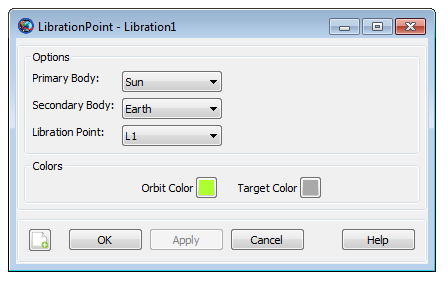

LibrationPoint
LibrationPoint — An equilibrium point in the circular, restricted 3-body problem
Description
A LibrationPoint, also called a Lagrange point, is an equilibrium point in the circular restricted three-body problem (CRTBP). There are five libration points, three of which are unstable in the CRTBP sense, and two that are stable. See the discussion below for a detailed explanation of the different libration points and for examples configuring GMAT for common libration point regimes. This resource cannot be modified in the Mission Sequence.
See Also: Barycenter, Color
Fields
| Field | Description | ||||||||||||
|---|---|---|---|---|---|---|---|---|---|---|---|---|---|
| OrbitColor | Allows you to set available colors on user-defined
LibrationPoint orbits. The libration point
orbits are drawn using the 3D OrbitView
graphics displays. Colors on a LibrationPoint
object can be set through a string or an integer array. For
example: Setting a libration point's orbit color to red can be
done in the following two ways:
| ||||||||||||
| Point | The libration point index.
| ||||||||||||
| Primary | The primary body or barycenter.
| ||||||||||||
| Secondary | The secondary body or barycenter.
| ||||||||||||
| TargetColor | Allows you to set available colors on
LibrationPoint object's perturbing orbital
trajectories that are drawn during iterative processes such as
Differential Correction or Optimization. The target color can be
identified through a string or an integer array. For example:
Setting a libration point's perturbing trajectory color to yellow
can be done in following two ways:
|
GUI
|  |
The dialog box allows you to select the Primary Body, Secondary Body, and the libration point index. You can select from celestial bodies and barycenters. You cannot choose the SolarSystemBarycenter as either the Primary or Secondary and the Primary and Secondary cannot be the same object.
Remarks
Overview of Libration Point Geometry
A LibrationPoint, also called a Lagrange point, is an equilibrium point in the Circular Restricted Three Body Problem (CRTBP). The definitions for the libration points used in GMAT are illustrated in the figure below where the Primary and Secondary bodies are shown in a rotating frame defined with the x-axis pointing from the Primary to the Secondary. GMAT is configured for the full ephemeris problem and computes the location of the libration points by assuming that at a given instant in time, the CRTBP theory developed by Lagrange and Szebehely can be used to compute the location of the libration points using the locations of the primary and secondary from the JPL ephemerides. The three collinear points (L1, L2, and L3) are unstable (even in the CRTBP) and the triangular points (L4, and L5) are stable in CRTBP.
 |
Configuring a Libration Point
GMAT allows you to define the Primary and/or Secondary as a or Barycenter (except SolarSystemBarycenter). This allows you to set the Primary as the Sun, and the Secondary as the Earth-Moon barycenter for modelling Sun-Earth-Moon libration points. See the examples below for details.
Setting Colors On Libration Point Orbits
GMAT allows you to assign colors to libration point orbits that are drawn using the OrbitView graphics display windows. GMAT also allows you to assign colors to perturbing libration point orbital trajectories which are drawn during iterative processes such as differential correction or optimization. The LibrationPoint object's OrbitColor and TargetColor fields are used to assign colors to both orbital and perturbing trajectories. See the Fields section to learn more about these two fields. Also see Color documentation for discussion and examples on how to set colors on a libration point orbit.
Examples
Create and use an Earth-Moon LibrationPoint.
% Create the libration point and rotating libration point coordinate system
Create LibrationPoint EarthMoonL2
EarthMoonL2.Primary = Earth
EarthMoonL2.Secondary = Luna
EarthMoonL2.Point = L2
Create CoordinateSystem EarthMoonRotLibCoord
EarthMoonRotLibCoord.Origin = EarthMoonL2
EarthMoonRotLibCoord.Axes = ObjectReferenced
EarthMoonRotLibCoord.XAxis = R
EarthMoonRotLibCoord.ZAxis = N
EarthMoonRotLibCoord.Primary = Earth
EarthMoonRotLibCoord.Secondary = Luna
% Configure the spacecraft and propagator
Create Spacecraft aSat
aSat.DateFormat = TAIModJulian
aSat.Epoch = '25220.0006220895'
aSat.CoordinateSystem = EarthMoonRotLibCoord
aSat.DisplayStateType = Cartesian
aSat.X = 9999.752137149568
aSat.Y = 1.774296833900735e-007
aSat.Z = 21000.02640446094
aSat.VX = -1.497748388797418e-005
aSat.VY = -0.2087816321971509
aSat.VZ = -5.42471673237177e-006
Create ForceModel EarthMoonL2Prop_ForceModel
EarthMoonL2Prop_ForceModel.PointMasses = {Earth, Luna, Sun}
Create Propagator EarthMoonL2Prop
EarthMoonL2Prop.FM = EarthMoonL2Prop_ForceModel
% Create the orbit view
Create OrbitView ViewEarthMoonRot
ViewEarthMoonRot.Add = {Earth, Luna, Sun,...
aSat, EarthMoonL2}
ViewEarthMoonRot.CoordinateSystem = EarthMoonRotLibCoord
ViewEarthMoonRot.ViewPointReference = EarthMoonL2
ViewEarthMoonRot.ViewDirection = EarthMoonL2
ViewEarthMoonRot.ViewScaleFactor = 5
Create Variable I
BeginMissionSequence
% Prop for 3 xz-plane crossings
For I = 1:3
Propagate 'Prop to Y Crossing' EarthMoonL2Prop(aSat) ...
{aSat.EarthMoonRotLibCoord.Y = 0}
EndForCreate and use a Sun, Earth-Moon LibrationPoint.
% Create the Earth-Moon Barycenter and Libration Point
Create Barycenter EarthMoonBary
EarthMoonBary.BodyNames = {Earth,Luna}
Create LibrationPoint SunEarthMoonL1
SunEarthMoonL1.Primary = Sun
SunEarthMoonL1.Secondary = EarthMoonBary
SunEarthMoonL1.Point = L1
% Create the coordinate system
Create CoordinateSystem RotatingSEML1Coord
RotatingSEML1Coord.Origin = SunEarthMoonL1
RotatingSEML1Coord.Axes = ObjectReferenced
RotatingSEML1Coord.XAxis = R
RotatingSEML1Coord.ZAxis = N
RotatingSEML1Coord.Primary = Sun
RotatingSEML1Coord.Secondary = EarthMoonBary
% Create the spacecraft and propagator
Create Spacecraft aSpacecraft
aSpacecraft.DateFormat = UTCGregorian
aSpacecraft.Epoch = '09 Dec 2005 13:00:00.000'
aSpacecraft.CoordinateSystem = RotatingSEML1Coord
aSpacecraft.X = -32197.88223741966
aSpacecraft.Y = 211529.1500044117
aSpacecraft.Z = 44708.57017366499
aSpacecraft.VX = 0.03209516489451751
aSpacecraft.VY = 0.06100386504053736
aSpacecraft.VZ = 0.0550442738917212
Create Propagator aPropagator
aPropagator.FM = aForceModel
aPropagator.MaxStep = 86400
Create ForceModel aForceModel
aForceModel.PointMasses = {Earth,Sun,Luna}
% Create a 3-D graphic
Create OrbitView anOrbitView
anOrbitView.Add = {aSpacecraft, Earth, Sun, Luna}
anOrbitView.CoordinateSystem = RotatingSEML1Coord
anOrbitView.ViewPointReference = SunEarthMoonL1
anOrbitView.ViewPointVector = [-1500000 0 0 ]
anOrbitView.ViewDirection = SunEarthMoonL1
anOrbitView.ViewUpCoordinateSystem = RotatingSEML1Coord
anOrbitView.Axes = Off
anOrbitView.XYPlane = Off
BeginMissionSequence
Propagate aPropagator(aSpacecraft, {aSpacecraft.ElapsedDays = 180})